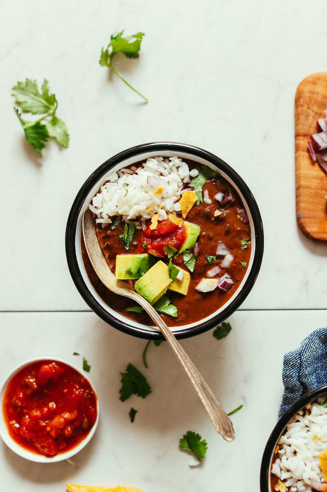

Black Bean Soup

Easy-to-make, comforting black bean soup made with simple ingredients in 1 pot! A 30-minute
meal or side that’s
customizable and incredibly satisfying.
Ingredients
- 1 Tbsp oil (or sub water)
- 1 cup diced white or yellow onion
- 3 cloves garlic (minced)
- 1/4 tsp each sea salt + black pepper (more to taste // depends on saltiness of broth)
- 2 15-ounce cans black beans* (slightly drained)
- 2 cups vegetable broth (or store bought)
- 2 tsp ground cumin (for smokiness)
- 1 ½ tsp chili powder
- 1/4 tsp ground coriander
- 1-2 chipotle peppers in adobo sauce (optional // for heat)
- 3 Tbsp chopped vegan dark chocolate (for depth of flavor // we like Theo Dark Chocolate Sea Salt // or sub
with 1 Tbsp cacao powder)
Instructions
- Heat a large pot over medium heat. Once hot, add oil (or water), onion, and garlic. Season with a pinch each
salt and pepper and sauté for 4-5 minutes.
- Add black beans, vegetable broth, cumin, chili powder, coriander, chipotle peppers (optional – start with
the lesser amount and work up // adjust to preferred heat level), dark chocolate, and remaining salt and
pepper (a couple healthy pinches each).
- Bring back to a simmer over medium heat, then reduce heat to low and cook uncovered for about 15-20 minutes
(the longer it simmers, the more the flavors develop).
- Taste and adjust flavor as needed, adding chipotle peppers for spice, chocolate for depth of flavor, cumin
or chili powder for smokiness, or more salt and pepper to taste.
- Enjoy as is, or pair with cooked grains such as rice or quinoa. Topping options include fresh lime, avocado
or guacamole, cilantro, onion, hot sauce, and/or salsa!
- Store soup well covered in the refrigerator up to 5-7 days. Will keep in the freezer for 1 month (oftentimes
longer).